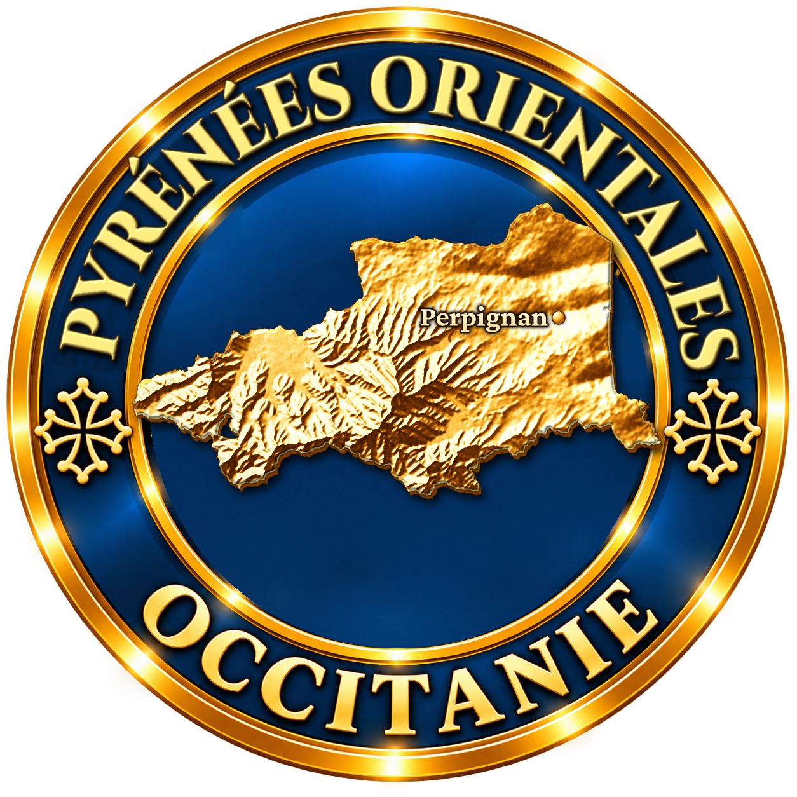
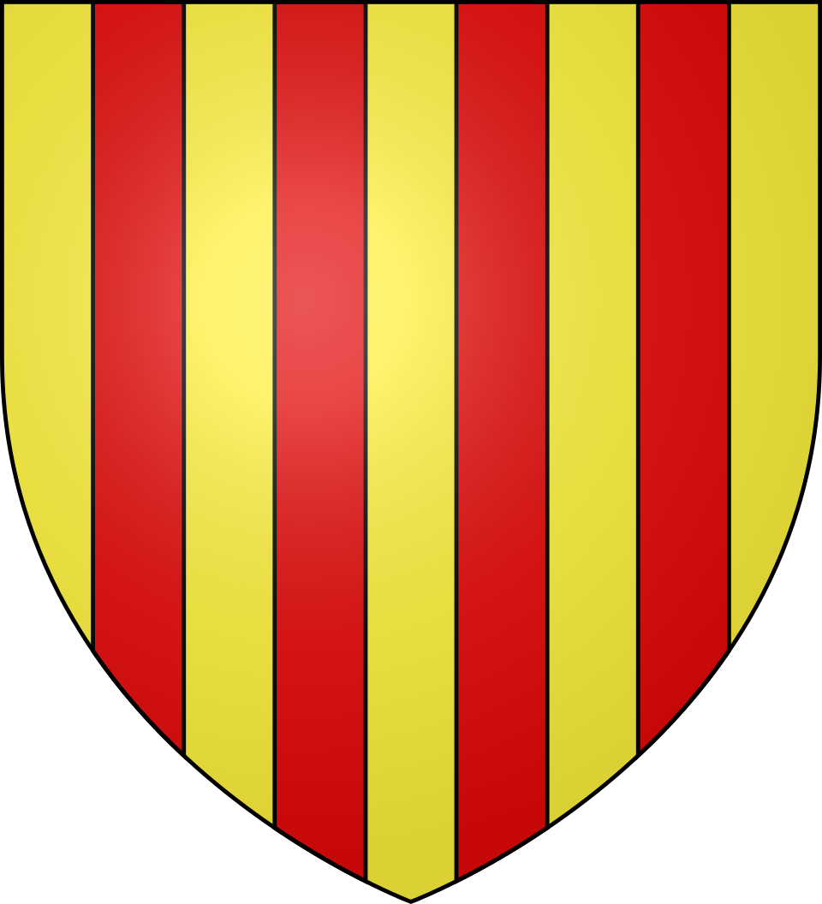

Une boucle de promenade au départ de Font-Romeu, sur le haut plateau de Cerdagne : le grand four solaire d’Odeillo, les bains d’eau chaude de Dorres, l’enclave espagnole de Llívia, le village de Llo au-dessus des gorges du Sègre, puis la citadelle de Mont-Louis avant le retour.
Le tracé de la carte suit le réseau routier réel. Voici les grands axes de la boucle ; l’itinéraire exact reste à confirmer avec un GPS ou une carte routière.
À savoir : la Cerdagne est un haut plateau à plus de 1 200 mètres, très ensoleillé mais frais. En hiver, prévoir des équipements pour la neige. Llívia est une ville espagnole entourée par la France.